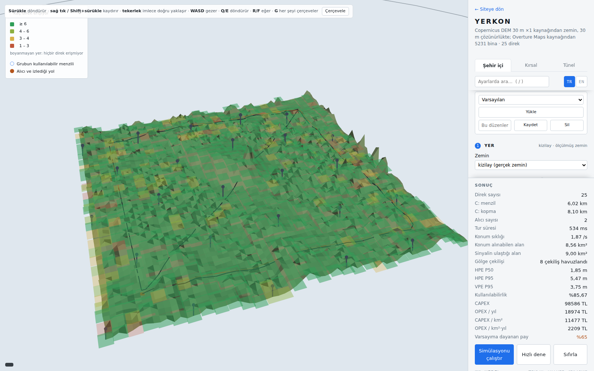

Simülasyon
Simülasyon bu projenin bir parçası, tamamı değil. Tek bir işi vardı: karşılaştırma tablosundaki üç YERKON satırını tahminle değil, her sayısı kaynağına kadar izlenebilen bir modelle doldurmak. Sahada yapılmış bir ölçüm değildir.

Arazi gerçek
- Üç satır da Ankara'nın gerçek arazisi üzerinde koşuldu. Yükseklik verisi Copernicus'un 30 metrelik haritasından bir kez indirilip paketin içine kondu, yani depoyu indiren biri tabloyu internete hiç çıkmadan yeniden üretebiliyor.
- Şehir Kızılay: bir kenarı üç kilometre, en alçak ve en yüksek noktası arasında 91 metre fark var. Açık arazi Polatlı ovası: bir kenarı yirmi kilometre, 486 metre yükseklik farkıyla. Tünel ise Kızılcahamam'daki dağların içinden geçen gerçek bir 2 kilometrelik güzergâh.
- Hiçbir yerde "düz zemin" seçeneği yok. Düz bir yüzey modelin çizebileceği en tarafsız arazi değil, en elverişli arazidir: sonucu olduğundan iyi gösterirdi.
Menzili tek bir hesap belirler
- Kodun hiçbir yerinde "azami menzil şu kadardır" diye bir sayı yok. Menzil, sinyalin yolda ne kadar zayıfladığı hesaplanarak çıkıyor. Aynı hesap iki şeye birden karar veriyor: bağlantı kuruluyor mu, ve kurulduysa ne kadar hassas ölçüyor.
- Sinyal alıcıya iki yoldan gelir: doğrudan, ve zeminden sekerek. Belli bir mesafeden sonra bu ikisi ters düşüp birbirini zayıflatır. O mesafe anten yüksekliğiyle birlikte arttığı için, birimi alçağa koymak menzilden götürür.
- Sinyal engellerin üzerinden bükülerek geçer ve bu sırada zayıflar. Hesap, yoldaki en kötü tek engele değil bütün araziye bakıyor (ITU-R P.526-15 §4.5.2, delta-Bullington). Kızılay'da bir bağlantının önünde ortalama üç engel var, en kötüsünde on altı.
- Arazi on metrede bir okunuyor. Sabit 64 noktada okunsaydı 6,9 km'lik bir kırsal bağlantıda bu 108 metrede bir demek olurdu; aradaki tümsekler atlandığı için kayıp 37,60 dB yerine 31,28 dB çıkardı.
- Bir bağlantı bu iki kaybın toplamını değil, büyüğünü öder. İkisi de aynı arazinin aynı bağlantıya yaptığını anlatıyor; toplamak aynı tepeyi iki kez saymak olurdu.
- Bunların üstüne bir de gölgeleme biniyor: aynı mesafedeki iki bağlantının, arada ne olduğuna göre farklı çıkması. Yol açıkken 4 dB, kapalıyken 7,8 dB kadar (3GPP TR 38.901). Rastgele olduğu için tablo tek bir çekilişi değil, sekiz çekilişin hepsini birden gösteriyor.
Mesajlaşma ve konum hesabı
- Mesafe hesapla çıkarılmaz, ölçülür. İki telsiz karşılıklı mesaj gönderir; SX1280'de bir ölçüm alışverişi, frekans atlamanın istediği %5 sessizlikle birlikte 33,4 milisaniye sürüyor.
- Sekiz birimle sırayla ölçüşmek 267 milisaniye sürüyor. Bu sürede 100 km/sa giden araç 7,4 metre yol alıyor, yani bir turdaki ölçümler aynı ana ait değil. Hesap da onları aynı anda alınmış gibi kabul etmiyor.
- Konumu hesaplayan kod, aracın gerçekte nerede olduğunu hiç görmez. Yalnızca şunları görür: ölçülen mesafe, birimin kurulumda ölçülmüş konumu, ölçümün saati, ve o ölçüme ne kadar güvenildiği.
- Yol kenarına dizilmiş birimler hep aynı yükseklikte olduğu için yüksekliği mesafelerle ölçmek zor. Filtre bu yüzden birimin haritasındaki yol yüksekliğini bir ölçüm olarak alıyor, 2,43 m'lik bir harita hatasıyla; hata yol boyunca parça parça çekiliyor. Tablodaki VPE sütunu bu hesabın sonucu.
Ortalamayla geçmeyen üç hata
- Önü kapalı bir bağlantı olduğundan uzun ölçer. Sinyal engelin üzerinden dolaşıyor, ve ölçüm bu uzun yolu sayıyor. Hata hep aynı yöne, artı yöne gidiyor; bu yüzden çok ölçüp ortalamak onu götürmüyor.
- Birimin konumu kurulumda yanlış ölçüldüyse, o yanlış orada kalır. Her birim için bir kez çekiliyor ve sonuna kadar taşınıyor. Tünelde hataların ortancası, birimler kusursuz ölçülmüş olsaydı 0,24 m çıkıyor; 15 cm'lik bir ölçüm hatasıyla bunun yedi katından fazla. Birimleri ölçtüğünüzden daha iyi konum veremiyorsunuz.
- Kaybolan mesaj ölçüm vermez. Kullanılan 2,4 GHz bandı kablosuz ağlarla ortak, yani kalabalık. Şehirde mesajların %15'i kayboluyor, açık yolda %5'i, tünelde hiçbiri.
Modele girmeyenler
- Aracın hareket sensörü ve tekerlek turu hesaba katılmadı. Filtre yalnız telsiz ölçümlerini ve haritadan gelen yüksekliği birleştiriyor. Rapordaki tasarımda ikisi de var; buradaki sayılar bu yüzden gerçek bir araçtan daha kötü.
- Telsizin kendi gürültüsü, sinyalin duvarlardan sekerek birden çok yoldan gelmesi ve mesajlaşma sırasında saatin kayması modele girmedi.
- Tünelin duvarları sinyali bir boru gibi taşır ve menzili uzatır; bu hesaba katılmadı. Yani tünel satırı gerçek bir tünelin vereceğinden kötü.
- Güvenlik katmanı da yok. İmza doğrulama ve anahtar yönetimi tasarımın parçası, simülasyonun değil.
Zaten yüksek yerler
Şehir içi ve kırsal satırlarda direkler bir ızgarada değil, bir yerleşim aramasının seçtiği yerlerde durur; simülatördeki Yöneylem yerleşimi bölümü aynı aramayı başka bir yer için koşar. Aday yerler var olan aydınlatma direkleri ve tabelalar, yüksekliği ölçülmüş binaların çatıları, tepeler ve yol kenarıdır. Her aday bağlantı bütçesiyle denenir; seçim, ömür boyu maliyete göre bir örtme aramasıdır. Bir nokta, dört direk ona ulaştığında ve bu direkler çevresinin en az üç çeyreğinde durduğunda sayılır, çünkü aynı caddeye dizilmiş dört direk cadde boyunca ölçmez.
Arama kendi sayımını verir; karar simülasyonundur. Önerilen yerleşimi uygulayıp Simülasyonu çalıştır düğmesine basınca eski yerleşimle aynı yolculukta karşılaştırılır.
Tarayıcıda ve kendi makinende
Simülasyonu çalıştır düğmesi simülatörü bu tarayıcıda açar. Hiçbir sunucu hesap yapmaz: Python, numpy ve bu projenin kendi paketi sayfaya iner ve her şey bu bilgisayarda koşar. İlk açılış yaklaşık 20 MB indirir ve bir dakika kadar sürebilir; sonra tarayıcı saklar. Tarayıcıda tek işlemci kullanıldığı için bir koşu yerel kurulumdakinden yavaştır; Hızlı dene bunu kısaltır.
Tabloyu yeniden yayımlamak, başka bir şehrin zeminini indirmek ya da üç satırı birden tam çözünürlükte koşturmak için yerel kurulum gerekir. Dört komut:
git clone https://github.com/ysoktar/yerkon
cd yerkon
pip install -e ".[dev]"
yerkon view